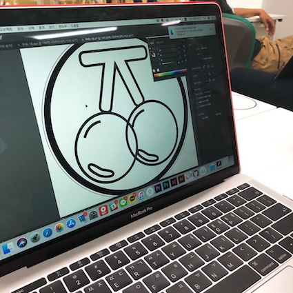
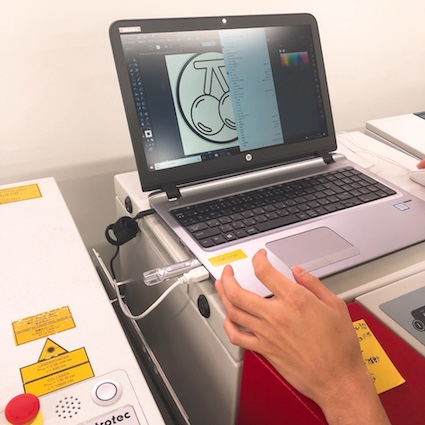
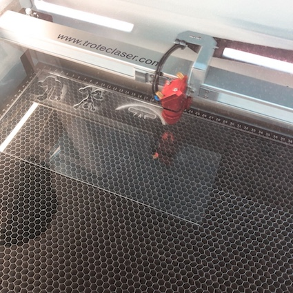
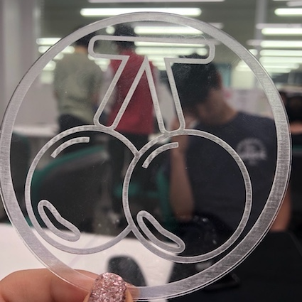

🌟ʟᴀsᴇʀ🌟

イラストプログラムで作りたいデザインを作る。

usbに作ったイラストファイルを移した後、Laser機械と連結されているコンピューターに挿す。

laser機械の中にアクリル版を入れて、大きさを調節する。 調節した後開始を押す。

私が作ったものは1、2分ほどかかった。 ピー音がなれば取り出してきれいにふくと、完成!
<反省点・改善点・分かったこと>
私が作成したい形状のまま出てきて良かった。 しかし、出てすぐには異物がひどいて水洗浄した。 他の友達のように最初からテープを貼って入れたりすると、少し良くなっているようだ。 イラストで作って機械に接続されているコンピュータに移動した後、作業が困難であった。 機会があればもう一度して確実に知りたい。
<ʏᴏᴜᴛᴜʙᴇ>